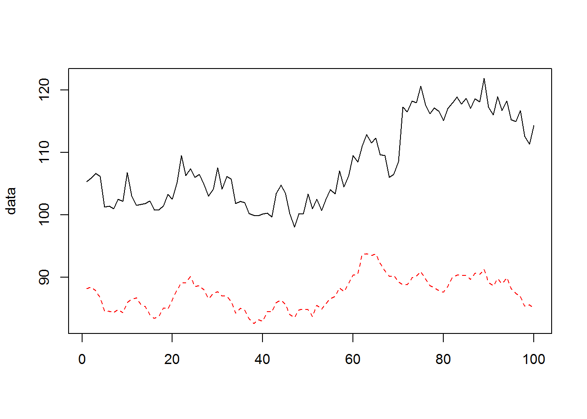
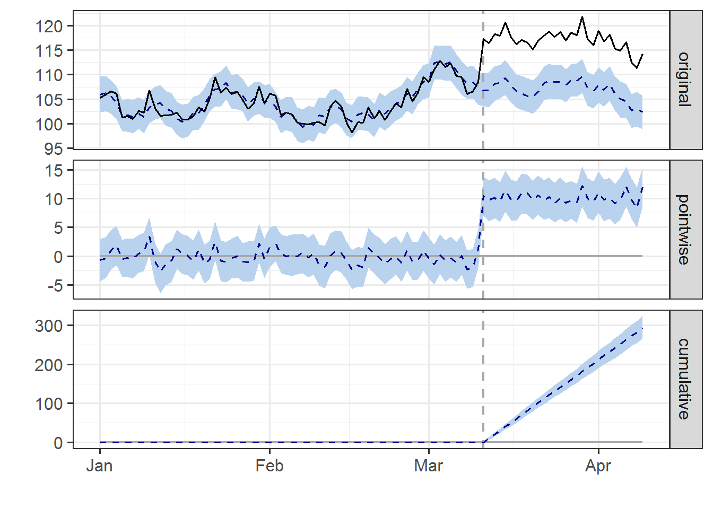
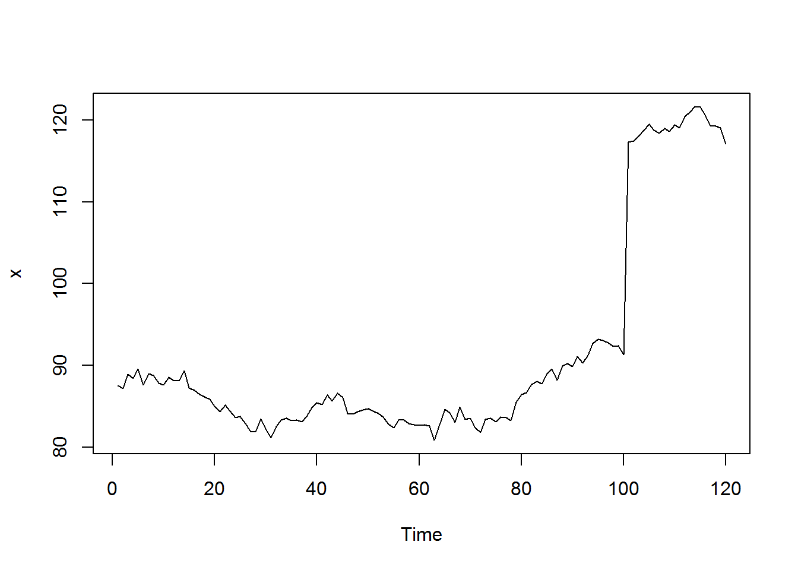
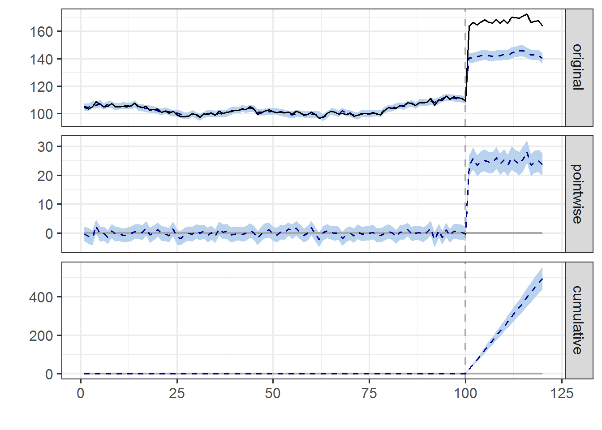

2. Causal Impact¶
2.1. Giới thiệu¶
Phương pháp này dùng để phân tích ảnh hưởng của sự kiện đến chuỗi thời gian. Ví dụ:
- Thay đổi tag name của website ảnh hưởng đến organic traffic như thế nào?
- Thay đổi ASO ảnh hưởng đến organic download của app như thế nào?
Giả định (Assumption)
- Tồn tại cặp biến Y và X, trong đó Y là biến cần đo ảnh hưởng của sự
kiện A tại thời điểm t, X là biến tham chiếu (control variable). Mối
quan hệ giữa Y & X có các giả định sau:
- X không bị ảnh hưởng bởi sự kiện A
- Y & X có mối tương quan và “covariate” không đổi theo thời gian
- Các khái niệm:
Pred-period: Thời gian trước khi xảy ra sự kiện APost-period: Thời gian sau khi xảy ra sự kiện AX: Control variable
Packages CausalImpact:
devtools::install_github("google/CausalImpact", force = T)
2.2. Ví dụ 1¶
Tạo dữ liệu với 100 quan sát có tương quan không đổi theo thời gian x và y. Từ quan sát thứ 71, xảy ra sự kiện A khiến y tăng thêm trung bình 10 đơn vị nhưng không ảnh hưởng đến x.
library(dplyr)
library(CausalImpact)
set.seed(1)
#Tạo mô hình ARIMA(0.999,0,0) hay AR(0.999)
x <- 100 + arima.sim(model = list(ar = 0.999), n = 100)
y <- 1.2 * x + rnorm(100)
y[71:100] <- y[71:100] + 10
#Tạo thời gian
time.points <- seq.Date(as.Date("2016-01-01"), by = 1, length.out = 100)
data <- zoo(cbind(y, x),time.points)
head(data)
## y x
## 2016-01-01 105.2950 88.21513
## 2016-01-02 105.8943 88.48415
## 2016-01-03 106.6209 87.87684
## 2016-01-04 106.1572 86.77954
## 2016-01-05 101.2812 84.62243
## 2016-01-06 101.4484 84.60650
tail(data)
## y x
## 2016-04-04 115.2148 88.23930
## 2016-04-05 114.9429 87.44356
## 2016-04-06 116.6694 86.95103
## 2016-04-07 112.5801 85.43364
## 2016-04-08 111.3394 85.65532
## 2016-04-09 114.3264 85.10503
matplot(data, type = "l")

#Xác định thời gian xảy ra sự kiện
pre.period <- as.Date(c("2016-01-01", "2016-03-11"))
post.period <- as.Date(c("2016-03-12", "2016-04-09"))
#Chạy mô hình
impact <- CausalImpact(data, pre.period, post.period)
plot(impact)

summary(impact)
## Posterior inference {CausalImpact}
##
## Average Cumulative
## Actual 117 3394
## Prediction (s.d.) 107 (0.51) 3100 (14.72)
## 95% CI [106, 108] [3070, 3128]
##
## Absolute effect (s.d.) 10 (0.51) 294 (14.72)
## 95% CI [9.2, 11] [265.8, 324]
##
## Relative effect (s.d.) 9.5% (0.47%) 9.5% (0.47%)
## 95% CI [8.6%, 10%] [8.6%, 10%]
##
## Posterior tail-area probability p: 0.00111
## Posterior prob. of a causal effect: 99.88901%
##
## For more details, type: summary(impact, "report")
summary(impact, "report")
## Analysis report {CausalImpact}
##
##
## During the post-intervention period, the response variable had an average value of approx. 117. By contrast, in the absence of an intervention, we would have expected an average response of 107. The 95% interval of this counterfactual prediction is [106, 108]. Subtracting this prediction from the observed response yields an estimate of the causal effect the intervention had on the response variable. This effect is 10 with a 95% interval of [9, 11]. For a discussion of the significance of this effect, see below.
##
## Summing up the individual data points during the post-intervention period (which can only sometimes be meaningfully interpreted), the response variable had an overall value of 3.39K. By contrast, had the intervention not taken place, we would have expected a sum of 3.1K. The 95% interval of this prediction is [3.07K, 3.13K].
##
## The above results are given in terms of absolute numbers. In relative terms, the response variable showed an increase of +9%. The 95% interval of this percentage is [+9%, +10%].
##
## This means that the positive effect observed during the intervention period is statistically significant and unlikely to be due to random fluctuations. It should be noted, however, that the question of whether this increase also bears substantive significance can only be answered by comparing the absolute effect (10) to the original goal of the underlying intervention.
##
## The probability of obtaining this effect by chance is very small (Bayesian one-sided tail-area probability p = 0.001). This means the causal effect can be considered statistically significant.
Giải thích
- Giá trị trung bình của chuỗi y đo được là 117 trong khi dự báo nếu không xảy ra A, y chỉ có gia trị 107
- Ảnh hưởng (effect) của A lên y là 10 đơn vị/ngày. Trong toàn bộ giai đoạn là 294
2.3. Ví dụ 2¶
x <- 100 + arima.sim(model = list(ar = 0.999), n = 120)
x[101:120] <- 110 + arima.sim(model = list(ar = 0.999), n = 20)
plot(x)

y <- 1.2 * x + rnorm(120)
y[101:120] <- 1.1*y[101:120] + 10
data <- cbind(y, x)
pre.period <- c(1, 100)
post.period <- c(101, 120)
impact <- CausalImpact(data, pre.period, post.period)
plot(impact)
